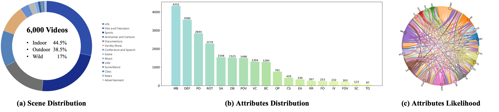
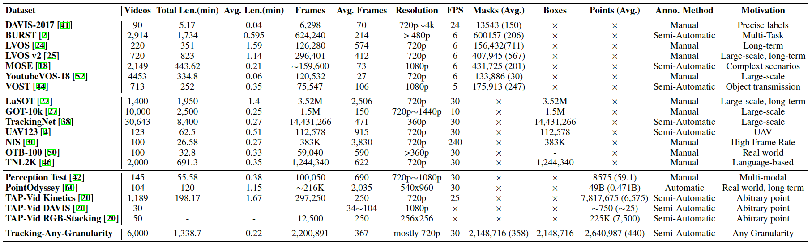

🗺️ SAM 2++: Tracking Anything at Any Granularity
🔍 Introduction of our SAM 2++
SAM 2++ is a general video tracking foundation model that can track any object at any granularity, including masks, bounding boxes, and points.
We present SAM 2++, a unified foundation model towards tracking anything at any granularity, including masks, bounding boxes, and points.
Video tracking tasks aim at finding the specific target in subsequent frames given its initial state.
Due to the varying granularity of target states across different tracking tasks, most existing trackers are tailored to a single task and rely heavily on independent modules across tasks.
This limits their generalization ability and leads to redundancy in both model design and parameters.
To yield a more generalized and compact architecture, we start by designing task-specific prompts and a unified decoder.
Besides, SAM 2++ captures the core principle of memory matching in tracking tasks to enable a unified model for multi-granularity tracking. We further introduce a task-adaptive memory mechanism that unifies target states across different granularities, while meeting the diverse requirements of various tasks.
To enable tracking any granularity, we present a customized data engine to construct a large and diverse video tracking dataset, termed Tracking-Any-Granularity, with comprehensive annotations at three granularities.
Through extensive training on large-scale video datasets, our SAM 2++ achieves state-of-the-art performance across a wide range of tracking tasks at different granularities, with a unified model.

🎥 Demos produced by our SAM 2++
Video Object Segmentation: mask ❤️ 💛 💙
| Tracking-Any-Granularity |
VISOR |
|
|
Single Object Tracking: box 🟥 🟨 🟦
| Tracking-Any-Granularity |
UAV123 |
|
|
Point Tracking: point 🔴 🟠 🔵
| TAP-Vid RGB-Stacking |
TAP-Vid DAVIS |
TAP-Vid RoboTAP |
|
|
|
| Tracking-Any-Granularity |
PerceptionTest |
|
|
🗃️ Example Videos from our dataset Tracking-Any-Granularity
Analysis of Statistics and Attributes

Comparison of our datasets with public datasets

🏆 Comparisons with existing video tracking methods
Video Object Segmentation

Single Object Tracking

Point Tracking